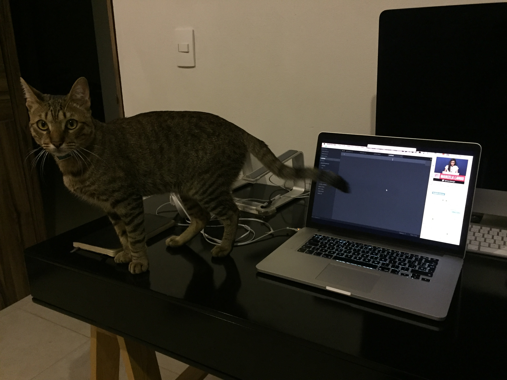
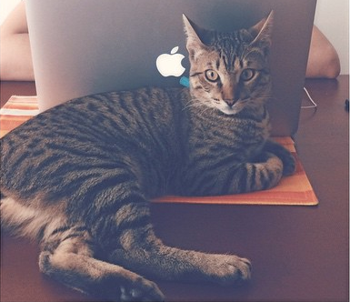

Git, el gato

Raza
Doméstico MexicanoColor
AtigradoNacimiento
~ 30 de Octubre, 2014Descripción
Git el gato es un gato doméstico mexicano, que desafortunadamente o afortunadamente fue abandonado por su madre biológico. Fue rescatado por Maru Lango cuando regresaba a casa después de ver un pélicula
Disfruta de subirse a los escritorios y de llenar de pelo su sillón (Porque el sillón al contrario de lo que sus humanos puedan pensar, es suyo)
Galería

